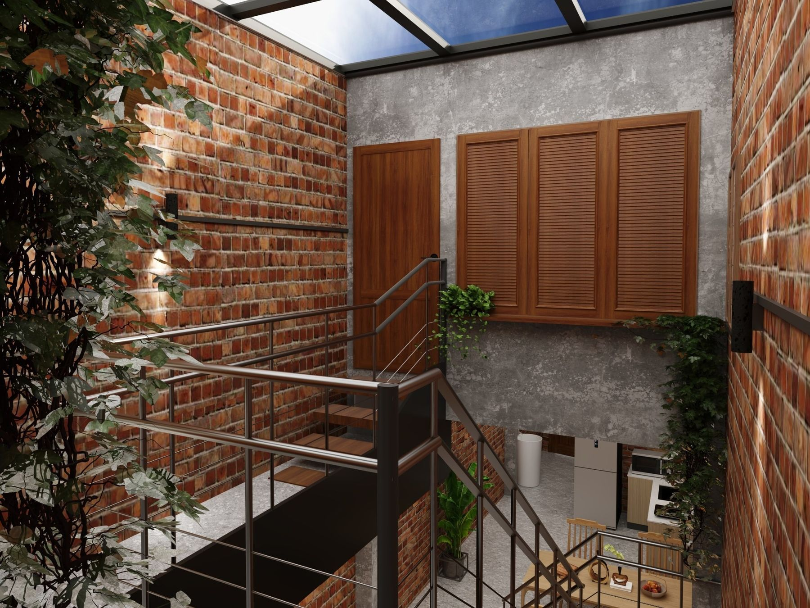

Artist's impression
Artist's impressioni.
The living room
A long room along the brick, with a sofa set, a TV ledge and a games table for the evening after Jonker.
 Artist's impression
Artist's impression
Three bedrooms, four bathrooms and a planted air-well under the skylight — the house is yours alone.
Like every old Melaka shophouse, this one opens onto the street through a narrow front and runs a long way back. Two storeys of exposed red brick, terrazzo and light oak, with an open air-well in the middle where the light comes down.
You walk it front to back: the living room, the courtyard, the dining table, then up the steel stair to the bedrooms.
Artist's impressionA long room along the brick, with a sofa set, a TV ledge and a games table for the evening after Jonker.
 Artist's impression
Artist's impressionThe heart of the house: greenery and running water under the skylight, at the foot of an open steel stair.
 Artist's impression
Artist's impressionA two-metre oak table under the stair, with a kitchenette — fridge, sink and hob — behind it.
 Artist's impression
Artist's impression Artist's impression
Artist's impressionThree bedrooms. Two keep the original clay-tile roof and timber rafters overhead; the master at the back has a freestanding bath.
The roomsJalan Hang Kasturi, Melaka
One street from Jonker Walk, inside Melaka's old town. Step out of the door and walk.
Open in Maps
Artist's impressionBook online in a few steps, or ask us anything on WhatsApp first.